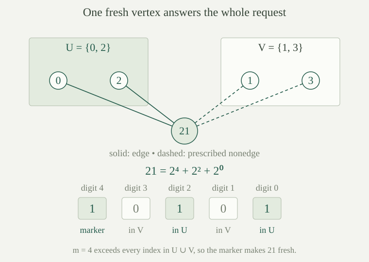

A simple graph is a set \(G\) with a symmetric, irreflexive binary relation \(E\). Its elements are vertices; two vertices are joined when \(E(a,b)\) holds. Symmetry means \(E(a,b)\iff E(b,a)\), and irreflexivity means \(\neg E(a,a)\). We use the finite relational language \(L_g=\{E\}\), with no functions or constants.
A graph embedding \(f:G\hookrightarrow H\) is an injective map such that \(E_G(a,b)\iff E_H(f(a),f(b))\). Thus it preserves both edges and nonedges, exactly as an embedding of relational structures does. The graph induced on a subset retains precisely the edges between its vertices. Empty finite graphs are allowed as induced substructures and as members of an age; ordinary models of a first-order theory remain nonempty.
A graph \(G\) has the finite extension property if, for every pair of disjoint finite subsets \(U,V\subseteq G\), there is a vertex \(z\) such that
Either prescribed set may be empty. The requirement that \(z\) lie outside both sets is part of the property: the vertex being added must be distinct from every vertex already placed. A countable graph with this property is called a countable random graph. Below we construct one and prove uniqueness up to isomorphism; no probability is needed for this characterization.
A graph with the finite extension property is infinite. More precisely, each fixed request \((U,V)\) has infinitely many distinct solutions.
Given finitely many solutions \(z_0,\ldots,z_{r-1}\) to the fixed request, put \(W=\{z_0,\ldots,z_{r-1}\}\). Every member of \(W\) lies outside \(U\), so \(U\) and \(V\cup W\) are disjoint finite sets. Apply the extension property to these two sets. The resulting vertex still satisfies the original request and lies outside \(W\). Starting with \(U=V=\varnothing\) and repeating this argument produces arbitrarily many distinct vertices.
For \(i,n\in\mathbb N\), write \(\varepsilon_i(n)=\lfloor n/2^i\rfloor\bmod 2\) for the binary digit in position \(i\). Define the Rado graph \(R\) on \(\mathbb N\) by
This is symmetric because interchanging the arguments interchanges the two alternatives. It is irreflexive because neither strict inequality holds when the arguments coincide. Thus it is a simple graph, and its vertex set is countably infinite.
If \(F\subseteq\mathbb N\) is finite and \(s_F=\sum_{j\in F}2^j\), then \(\varepsilon_i(s_F)=1\) if and only if \(i\in F\).
First, \(\sum_{j<k}2^j=2^k-1\), by induction on \(k\), including \(k=0\). Split the sum into positions below, equal to, and above \(i\). The lower part \(\ell=\sum_{j\in F,\,j<i}2^j\) satisfies \(0\le\ell<2^i\). The part above \(i\) is a multiple of \(2^{i+1}\), say \(2^{i+1}q\). Thus
Dividing by \(2^i\) and taking the integer part gives \(\delta+2q\), whose remainder modulo \(2\) is \(\delta\). The strict bound on the lower part prevents any carry into position \(i\). This is also the coding principle behind coding finite subsets by sums of powers of two.
The Rado graph \(R\) has the finite extension property. For disjoint finite \(U,V\subseteq\mathbb N\), choose \(m\) larger than every member of \(U\cup V\). Then one solution is
If both sets are empty, any \(m\), for example \(0\), is permitted. In all cases \(m\notin U\), so the displayed sum uses distinct positions \(\{m\}\cup U\). By , its digit in every position below \(m\) is \(1\) exactly at the positions in \(U\), and is therefore \(0\) at the positions in \(V\).
The inequality \(2^m>m\) follows by induction: it holds at \(0\), and \(2^{m+1}=2\cdot2^m\ge 2(m+1)>m+1\). Consequently \(w\ge2^m>m\), so \(w\) is greater than every vertex in \(U\cup V\) and is a fresh vertex. For each prescribed vertex \(a\), the edge \(E_R(w,a)\) is determined by digit \(a\) of \(w\). The digits just computed give exactly the required edges and nonedges.

Let \(G,H\) be graphs, with \(H\) having the finite extension property. If \(A\subseteq G\) is finite, \(f:G\mathbin{\upharpoonright}A\hookrightarrow H\) is an embedding, and \(x\in G\setminus A\), then \(f\) extends to an embedding of the graph induced on \(A\cup\{x\}\).
Partition the image of \(A\) into
The sets are finite and disjoint because \(f\) is injective. The extension property in \(H\) gives \(z\notin U\cup V=f(A)\) with the prescribed incidences. Retain \(f\) on \(A\) and send \(x\) to \(z\). This map is injective. Pairs in \(A\) retain their edge status, pairs involving \(x\) have the required status by construction and symmetry, and the pair \((x,x)\) has no edge in either graph by irreflexivity. The map is therefore an embedding.
Let \(H\) have the finite extension property. For finite graphs \(A,B\) and embeddings \(f:A\hookrightarrow H\), \(g:A\hookrightarrow B\), there is an embedding \(h:B\hookrightarrow H\) with \(h\circ g=f\). In particular, every finite graph embeds into \(H\).
The specified placement on the induced subset \(g(A)\subseteq B\) sends \(g(a)\) to \(f(a)\). This is well-defined and is an embedding because both \(f\) and \(g\) are embeddings. List the finitely many remaining vertices of \(B\), and apply successively to that placement. Every step preserves all previous values. After the last step, the resulting map \(h\) has domain all of \(B\) and satisfies the required equation.
For the last assertion, take \(A\) to be the empty graph. Its unique maps into \(B\) and \(H\) are embeddings, so the same argument gives an embedding of \(B\).
Let \(K\) be the class of all finite simple graphs, including the empty graph. The Rado graph is a Fraïssé limit of \(K\). It is ultrahomogeneous, every countable graph embeds into it, and \(K\) has the amalgamation property.
Every finite induced substructure of a graph is a graph, and embeds every finite graph into \(R\). Hence \(\operatorname{Age}(R)=K\). The same theorem gives exactly the \(K\)-extension property, including its equation for a specified placement. Since \(R\) is countable, it is a Fraïssé limit by definition.
The extension–homogeneity equivalence makes it ultrahomogeneous. Any countable graph has age contained in \(K\), so the limit universality theorem embeds it into \(R\). Finally, the age of an ultrahomogeneous structure has amalgamation, giving AP for \(K\). These conclusions concern induced embeddings, which preserve nonedges as well as edges.
The random graph theory \(T_{\mathrm{rg}}\) in \(L_g\) consists of the graph axioms
together with the following extension schema, one sentence for every \(m,n\in\mathbb N\). For tuples \(\bar x=(x_i)_{i<m}\) and \(\bar y=(y_j)_{j<n}\), use the formula abbreviations
The sentence for these two lengths is
These are abbreviations for finite formulas in the existing first-order syntax, not new relation symbols. Empty conjunctions mean \(\top\). Repetitions within either tuple are allowed; \(D\) forbids only equality between a coordinate of \(\bar x\) and a coordinate of \(\bar y\). The inequalities involving \(z\) state freshness explicitly, including on the nonadjacent side.
A nonempty \(L_g\)-structure is a model of \(T_{\mathrm{rg}}\) if and only if it is a simple graph with the finite extension property. In particular, the theory has a model and has no finite models.
The first two axioms say exactly that the relation is symmetric and irreflexive. In a model of the schema, enumerate any disjoint finite sets \(U,V\) as the two tuples, allowing a tuple to have length zero. Their disjointness makes \(D\) true, and the supplied witness is outside both sets and has the required incidences.
Conversely, suppose a graph has the extension property. For any assignment to \(\bar x,\bar y\) satisfying \(D\), their ranges are disjoint finite sets. A fresh solution for these ranges satisfies every conjunct of \(P\) and \(N\), even if a tuple contains repetitions. Thus every schema sentence is true. The Rado graph supplies a model by , and excludes finite models.
Any two countable models of \(T_{\mathrm{rg}}\) are isomorphic. More strongly, any isomorphism between their finite induced subgraphs extends to an isomorphism of the models. The theory \(T_{\mathrm{rg}}\) is complete.
By and , both models have age \(K\) and the \(K\)-extension property. They are therefore Fraïssé limits of \(K\). The uniqueness theorem with a prescribed finite map gives the stated isomorphism. Starting with the empty map proves the unprescribed assertion.
The language is finite, hence countable. The theory is satisfiable and has no finite models, so the existing countable-categoricity test for completeness applies. Thus every sentence or its negation is a consequence of \(T_{\mathrm{rg}}\).
Let \(G,H\models T_{\mathrm{rg}}\), with no countability assumption. Every isomorphism \(p:A\cong B\) between finite induced subgraphs is a partial elementary map: for every first-order formula \(\varphi(\bar x)\) and every tuple \(\bar a\) from \(A\),
Induct on formulas, asserting the induction hypothesis for every finite partial graph isomorphism between any two models of the theory, and every tuple from its domain. Terms in this language are variables. Atomic equalities agree because the map is injective, and atomic edge formulas agree because it is an isomorphism on its induced domain. The induction steps for Boolean connectives follow by combining the corresponding truth equivalences.
For an existential formula, suppose \(G\models\exists y\,\theta(\bar a,y)\), and choose a witness \(u\in G\). By , extend the very same finite map \(p\) to a finite partial graph isomorphism \(q\) whose domain contains \(u\). If the vertex is already in the domain, retain \(p\). The induction hypothesis for \(\theta\), applied to \(q\) and \((\bar a,u)\), gives \(H\models\theta(p(\bar a),q(u))\). Thus \(q(u)\) is a witness in \(H\).
Conversely, start with a witness in \(H\) and apply the same argument to the inverse finite map \(p^{-1}\), using the extension property in \(G\). This gives the reverse implication. Universal quantifiers are handled by \(\forall y\,\theta\equiv\neg\exists y\,\neg\theta\). The induction therefore proves agreement for every formula, without restricting the sizes of the ambient models.
For the fixed variables \(x_0,\ldots,x_{r-1}\), a complete atomic pattern is a conjunction choosing, for each of the atoms \(x_i=x_j\) and \(E(x_i,x_j)\), either that atom or its negation. There are finitely many such patterns, since there are only \(2r^2\) atoms on this list. The empty pattern for \(r=0\) is \(\top\). A pattern is realizable if some tuple in some model of \(T_{\mathrm{rg}}\) satisfies it.
Every tuple satisfies exactly one complete pattern. Some formal choices are not realizable, since equality, symmetry and irreflexivity impose restrictions. If tuples \(\bar a\) and \(\bar b\) in two graph structures satisfy the same pattern, the assignment \(a_i\mapsto b_i\) is a well-defined isomorphism between their finite induced ranges: the equality choices make it well-defined and bijective, and the edge choices preserve and reflect the relation. These patterns are actual quantifier-free \(L_g\)-formulas, using the finite conjunctions described in the one-quantifier criterion.
The random graph theory \(T_{\mathrm{rg}}\) has quantifier elimination in its first-order language. For every formula \(\varphi(x_0,\ldots,x_{r-1})\), there is a quantifier-free formula \(\psi\) in those variables such that
If tuples in two models of the theory have the same complete atomic pattern, their finite induced ranges are isomorphic by the map sending corresponding coordinates to each other. By , they agree on \(\varphi\). Consequently, among tuples in models of the theory, the truth of \(\varphi\) depends only on the pattern.
Take the finite collection of realizable patterns for which \(\varphi\) is true at a realizing tuple, and let \(\psi\) be their disjunction. The previous paragraph shows that a different realization of the same pattern has the same truth value, even in a different model, so this choice is unambiguous. For any tuple in any model, its own pattern belongs to the collection exactly when \(\varphi\) is true there. Thus \(\psi\) has exactly the same truth value as \(\varphi\) throughout the models of the theory.
This is a finite disjunction of finite conjunctions of literals in the graph language, and hence is quantifier-free. If the collection is empty, use \(\bot\). If \(r=0\), the only pattern is \(\top\), so the result is either \(\top\) or \(\bot\). Unrealizable patterns need not be included.
Find quantifier-free equivalents modulo \(T_{\mathrm{rg}}\) of \(\exists z\,(E(z,x)\land E(z,y))\) and \(\exists z\,(E(z,x)\land\neg E(z,y))\). The coordinates \(x,y\) are allowed to coincide.
The first formula is equivalent to \(\top\). Apply the finite extension property with \(U=\{x,y\}\) and \(V=\varnothing\); this also works when the set has only one member.
The second formula is equivalent to \(x\ne y\). A witness makes equality impossible, since the two required truth values would then contradict each other. If \(x\ne y\), apply the property to the disjoint sets \(U=\{x\}\), \(V=\{y\}\), obtaining a witness. Both equivalences concern the given vertices in every model of the theory.